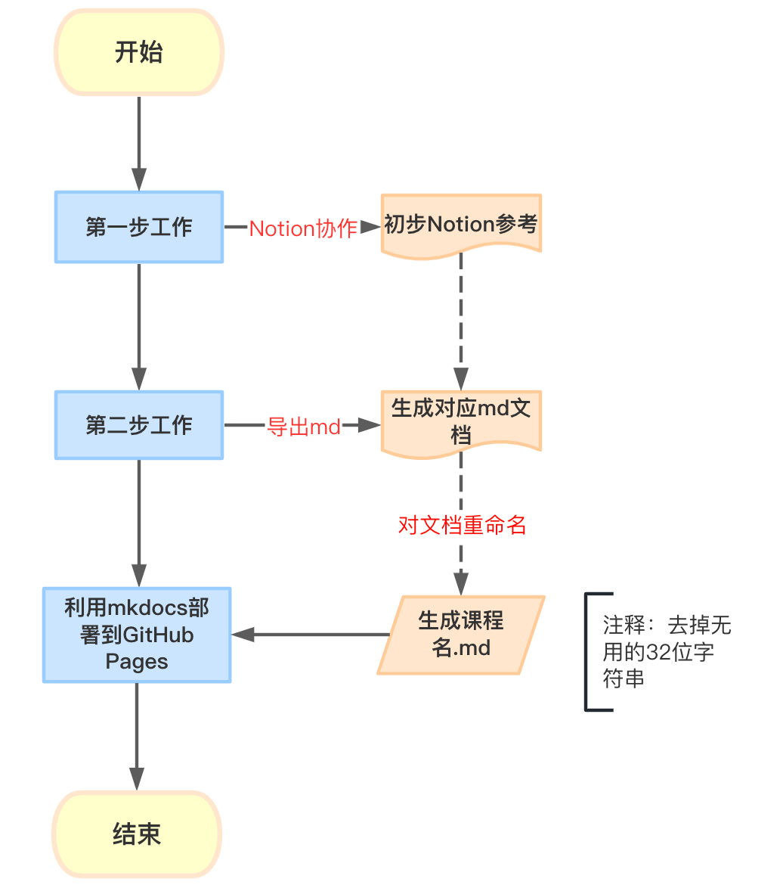

Overview
Misc¶
等你选课和考试的时候，你就会意识到这个攻略的重要性了-.--
西北工业大学研究生选课参考，本项目旨在为研究生提供一个选课参考，不至于对课程见名知义。
此项目的产生源于对西工大选课流程的不熟悉。
本该在去年考完试就进行的，拖到现在23年4月份导致去年课程的一些细节忘记了。
拒绝与教务老师的**无效沟通**，避免针对教务系统的不熟悉导致选课迷茫（针对外校来的学生）。
选课选不好，能让你痛苦好久，起码一两个月，尤其是一些专业课。
关于教务系统使用问题，预计今年还会出现不少，他们教务系统年复一年地回答同样的问题，但由于当时没买此台电脑，且已退群，故此部分缺失，还需23级同学帮忙收集整理。
不上传涉密文档、言论尽量客观，除非内容特别离谱。
本项目不需要广泛传播，因为信息差时刻存在，范围大了、有偏激言论了万一被任课老师请喝茶我就寄了。
遇见就是缘，何不来一个star？
工作流程¶
还没完全搞懂mkdocs的部署机制，或许会出现一些视觉问题，勉强能用。
本项目主题部分在Notion协作完成，导出markdown文件后利用mkdocs部署到GitHub Pages。
选用Notion的原因是Notion编辑更为方便，并且我的公众号投票中Notion和GitHub Pages得票相同。
大致流程如下：

如何参与协作？¶
1、在GitHub中的本项目提PR，格式参考已经发布的课程格式
2、tedlau888@gmail.com联系我，我拉你进入Notion，里面信息更为全面
3、公众号后台给我留言，目前公众号名称为：TedLau的呓语